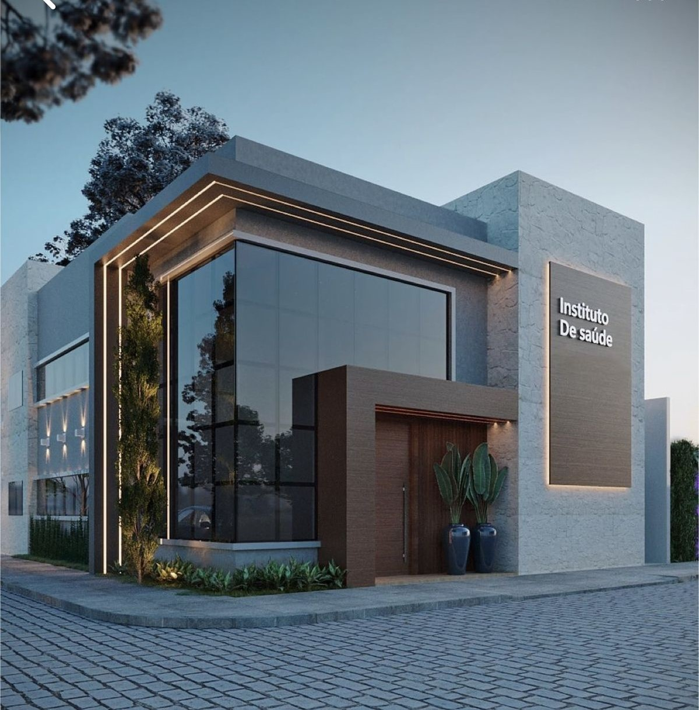

Sobre a Clínica
A Clínica Psiquiátrica Dark Water é referência em tratamentos de transtornos mentais severos. Nossa equipe é composta por médicos renomados com especialização em casos de dissociação, esquizofrenia e psicose induzida.
Instalada em uma estrutura segura, moderna e acolhedora, contamos com alas especializadas para isolamento, terapias de reabilitação e integração à sociedade.
Tratamentos e Preços
- Internação completa: R$ 7.500/mês
- Terapia intensiva diária: R$ 1.200/semana
- Avaliação psiquiátrica completa: R$ 750
- Programa de reabilitação para traumas: R$ 3.000
Imagens da Clínica
